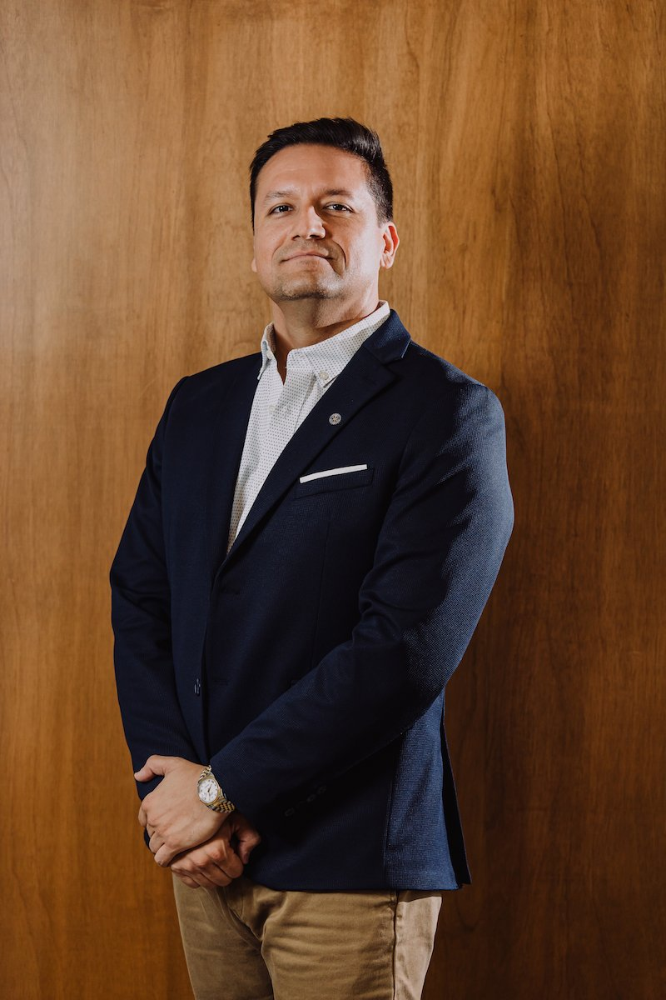
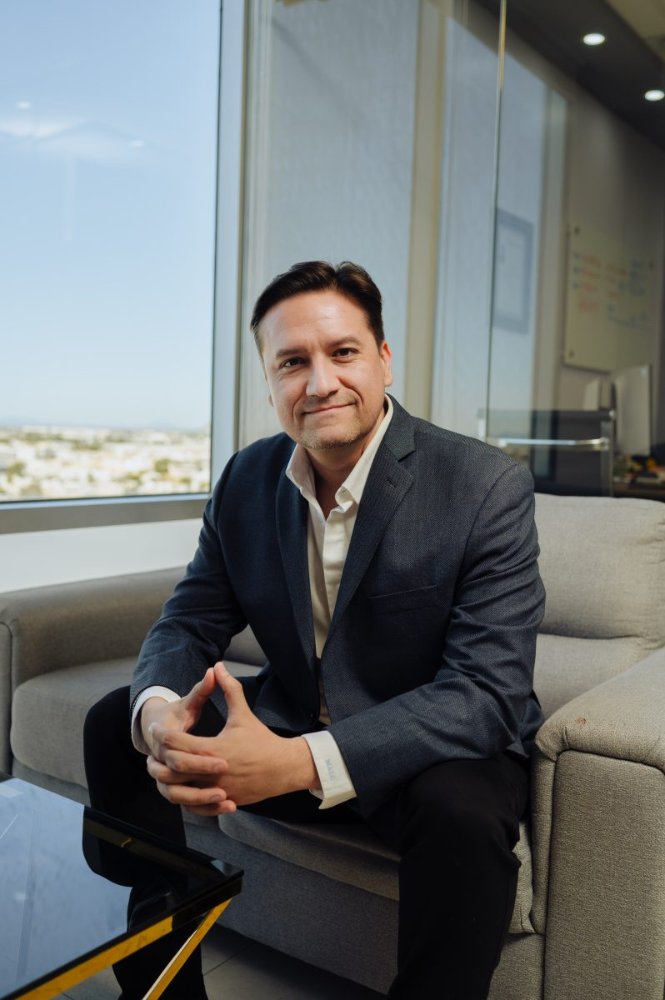
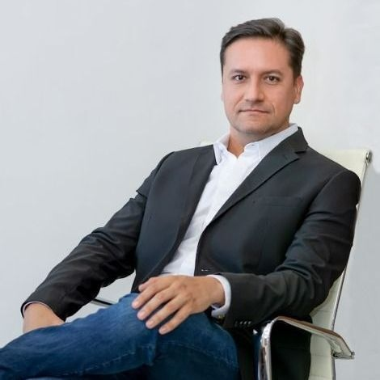

Adicciones y conductas compulsivas
Atención especializada para consumo problemático de sustancias, conductas compulsivas y prevención de recaídas, con acompañamiento familiar.

El Lic. Christian Martínez Leyva acompaña a personas y familias con más de 20 años de experiencia en psicoterapia clínica, tratamiento de adicciones e intervención en crisis.

Atención psicológica profesional, humana y basada en evidencia, para comprender lo que estás viviendo y recuperar estabilidad, funcionalidad y calidad de vida.Lic. Christian Martínez Leyva

Lic. Christian Martínez Leyva
Christian Martínez Leyva es psicólogo clínico con más de 20 años de experiencia en la evaluación y el tratamiento de problemas de salud mental, trastornos por consumo de sustancias y conductas adictivas.
A lo largo de su trayectoria ha acompañado a personas y familias que enfrentan condiciones complejas, así como problemas frecuentes de ansiedad, depresión, estrés, duelo, impulsividad y dificultades familiares. Su práctica integra herramientas clínicas basadas en evidencia y psicoterapia cognitivo-conductual, y cuando el caso lo requiere colabora con médicos, psiquiatras y otros profesionales de la salud.
Por completar con el Lic. Martínez: universidad, número de cédula profesional, posgrados y certificaciones. En la referencia esta lista es lo que más confianza genera, y Google la valora en temas de salud.
Cada proceso comienza con una valoración clínica y se adapta a las necesidades, objetivos y circunstancias de la persona.
Atención especializada para consumo problemático de sustancias, conductas compulsivas y prevención de recaídas, con acompañamiento familiar.
La valoración inicial permite comprender el motivo de consulta, revisar antecedentes relevantes e identificar prioridades.
Un espacio profesional y confidencial para trabajar emociones, pensamientos, conductas y situaciones personales que afectan el bienestar.
Atención ante crisis de ansiedad, conflictos familiares, recaídas, pérdidas importantes o situaciones que requieren contención profesional.
Apoyo a familias para comprender el problema, mejorar la comunicación, establecer límites saludables y coordinar el trabajo con otros profesionales.
Espacio adaptado para adolescentes y jóvenes, con orientación a padres y cuidadores basada en ética y confidencialidad.
Cada persona llega con una historia diferente. Por eso el proceso empieza por comprender el problema antes de proponer un plan.
Analizamos qué está ocurriendo, desde cuándo se presenta, cómo afecta tu vida y qué factores podrían originar o mantener el malestar.
Diseñamos una estrategia terapéutica adaptada a tus necesidades, objetivos, recursos y contexto personal, con seguimiento de los avances.
Desarrollamos recursos emocionales, cognitivos y conductuales que puedas aplicar fuera de la consulta para mantener los avances.
El Lic. Martínez es fundador de Grupo Los Altos, que reúne atención residencial, ambulatoria y tecnología especializada en salud mental.
Atención residencial especializada para trastornos agudos de salud mental y problemas relacionados con el consumo de sustancias, con un modelo multidisciplinario y confidencial.
Ver folletoSeguimiento ambulatorio después de un tratamiento residencial, además de evaluación y consulta para condiciones que no requieren internamiento.
Ver folletoAlternativa no invasiva para ciertos trastornos neuropsiquiátricos, especialmente la depresión resistente al tratamiento convencional, con valoración previa.
Ver folletoProyecto de turismo médico transfronterizo frente al mar, para la atención de salud mental y adicciones de pacientes de Arizona, California y otras regiones de Estados Unidos. Actualmente en etapa de fondeo y captación de inversión.
Espacio reservado. Aquí se mostrarán las reseñas del Perfil de Empresa en Google cuando existan, con la calificación promedio, como en la página de referencia. No se publicarán testimonios inventados.
Si tienes otra duda, escribe por WhatsApp al +52 662 380 0030. Todas las conversaciones son confidenciales.
Es psicólogo clínico en Hermosillo, Sonora, con más de 20 años de experiencia en salud mental, adicciones y conductas compulsivas, y fundador de Grupo Los Altos.
Cuando una situación emocional, familiar, laboral o personal comienza a afectar tu bienestar, tus relaciones, tu sueño, tu rendimiento o tu calidad de vida. No es necesario esperar a una crisis para buscar atención.
Sí. La primera sesión permite conocer el motivo de consulta, comprender la situación actual, revisar antecedentes relevantes y definir las recomendaciones iniciales.
Sí. Cuento con experiencia en el tratamiento psicológico de las adicciones, prevención de recaídas, motivación para el cambio, acompañamiento familiar y manejo de conductas compulsivas.
Sí. La orientación familiar puede ser especialmente importante ante una crisis emocional, un trastorno de salud mental, consumo de sustancias, conflictos familiares o dificultades para establecer límites.
Sí. La atención se brinda dentro de un marco profesional, ético y confidencial. En la primera sesión se explican los alcances y límites legales y éticos de la confidencialidad.
La duración depende del motivo de consulta, los objetivos establecidos, la evolución del paciente y la constancia en el proceso. Después de la valoración inicial se propone un plan de trabajo y se revisan periódicamente los avances.
El Lic. Christian Martínez Leyva atiende de manera presencial en Hermosillo, Sonora, de lunes a viernes con cita previa. Puedes agendar por WhatsApp al +52 662 380 0030 o escribir a licmartinezleyva@gmail.com.
Agenda tu valoración inicial o escribe si tienes preguntas. Todas las conversaciones son confidenciales.